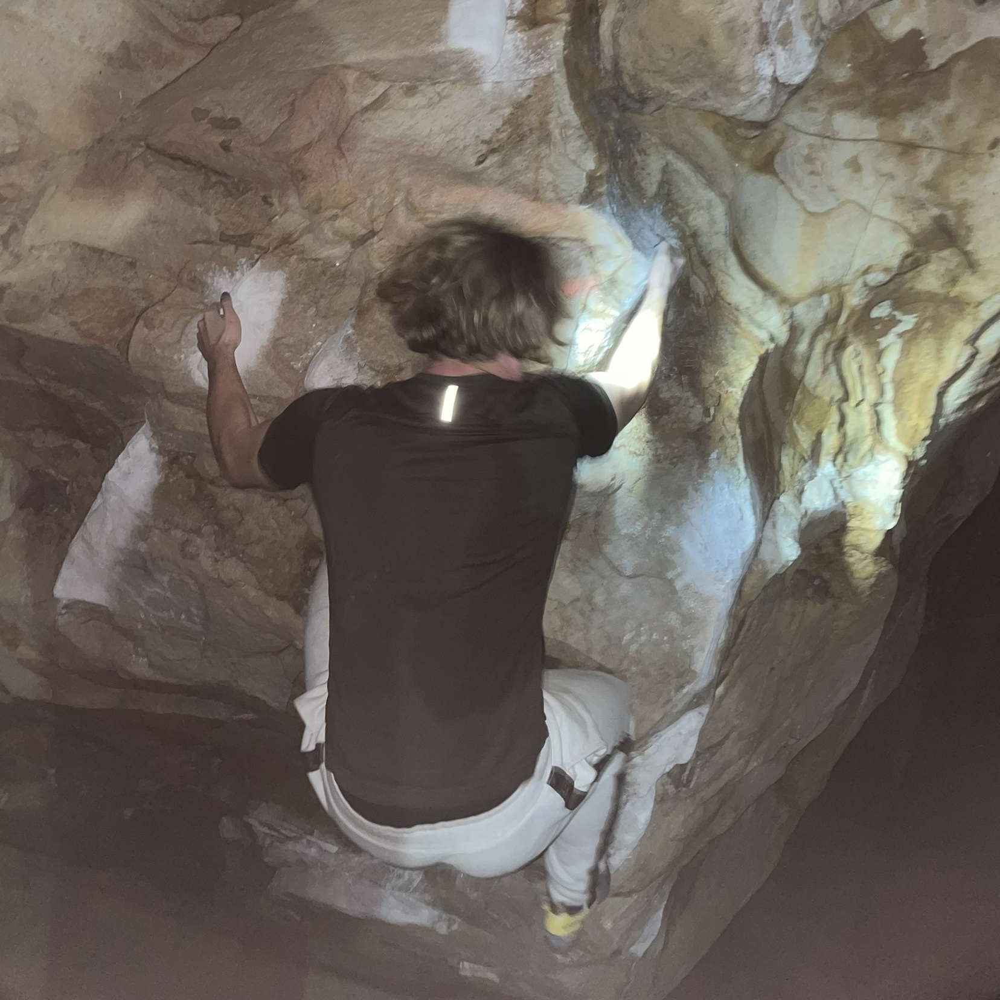

Welcomes
This is my climbing photo stockpile. I didnt know what to use for this website so I just yoinked a bunch of photos and videos from my phone and google drive. Enjoy.
Media
In this tab you will find some audio files and videos. The songs are what get me hyped to climb! The videos are 2 of my hardest climbs
 MediaGallery
In this tab you get to see a photodump reformatted for each type of device you use. Some photos are from me climbing outside and some are from an interview high point (climbing gym) did on me.
galleryHype
Now this is where its at. Kissing toads again! And I can't wait to kiss some toads again. They're always hopping in my garden at nighttime. And I wish they'd just come out for me to kiss.
 Play
Play